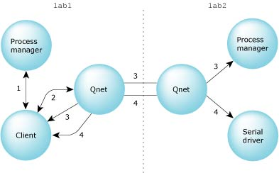

4.9. Реализация доступа к файлам |
4.9. Реализация доступа к файлам |
|  | open ( "/net/lab2/dev/ser1", ... ) |
1. ConnectAttach PM (local), MsgSend -> "open /net/lab2/dev/ser1"
<- "ask Qnet (pid, chid)"
2. ConnectAttach Qnet (local), MsgSend -> "open lab2/dev/ser1"
<- "ask PM (remote) (nd, pid, chid)"
3. ConnectAttach PM (remote), MsgSend -> "open dev/ser1"
<- "ask Serial driver (nd, pid, chid)"
4. ConnectAttach Serial driver, MsgSend "open"
<- "OK"